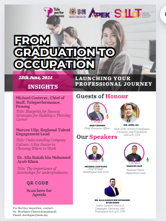
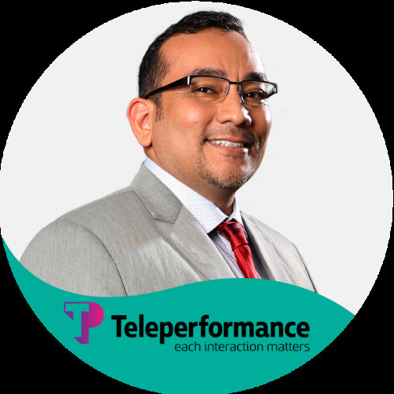
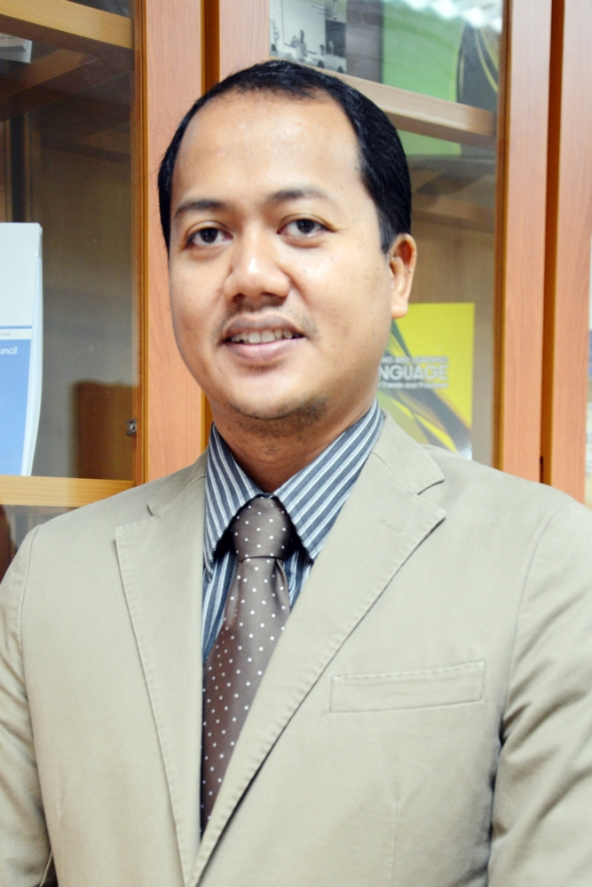
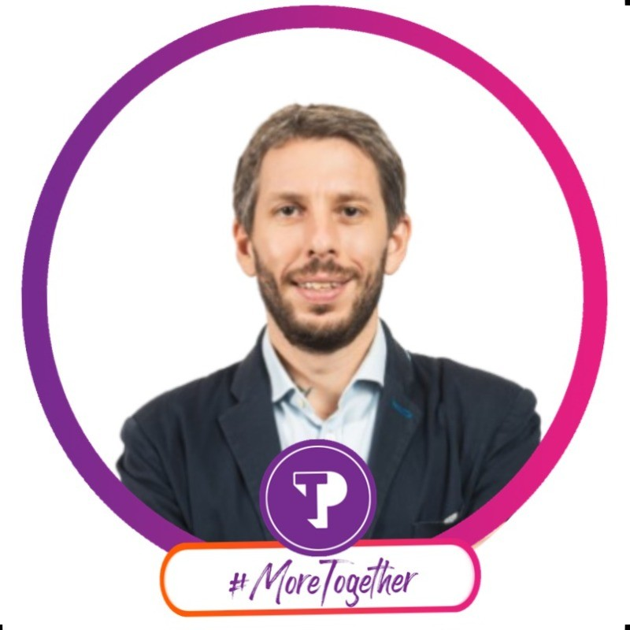

| Time | Activity |
|---|---|
| 9:30 AM - 10:00 AM |
Registration
|
| 10:00 AM - 10:30 AM |
Opening Ceremony
|
| 10:30 AM - 10:45 AM |
Event Overview and MoU Signing
|
| 10:45 AM - 12:00 PM |
Talks by Invited Speakers from Teleperformance
|
| 12:00 PM |
Event Conclusion
|
| 12:00 PM - 1:00 PM |
Informal Interviews and Networking
|
For further inquiries and to register, please fill out the following form:
Google Form Link

Guests of Honour

Andy Rangel
Chief Executive Officer

Mr. Azril Ali
Dean of the School of Languages, Literacies, and Translation (SoLLAT), USM
Our Speakers

Michael Costevec
Chief of Staff - Multilingual Hub APAC
Marcos Ulip
Regional Talent Engagement Lead